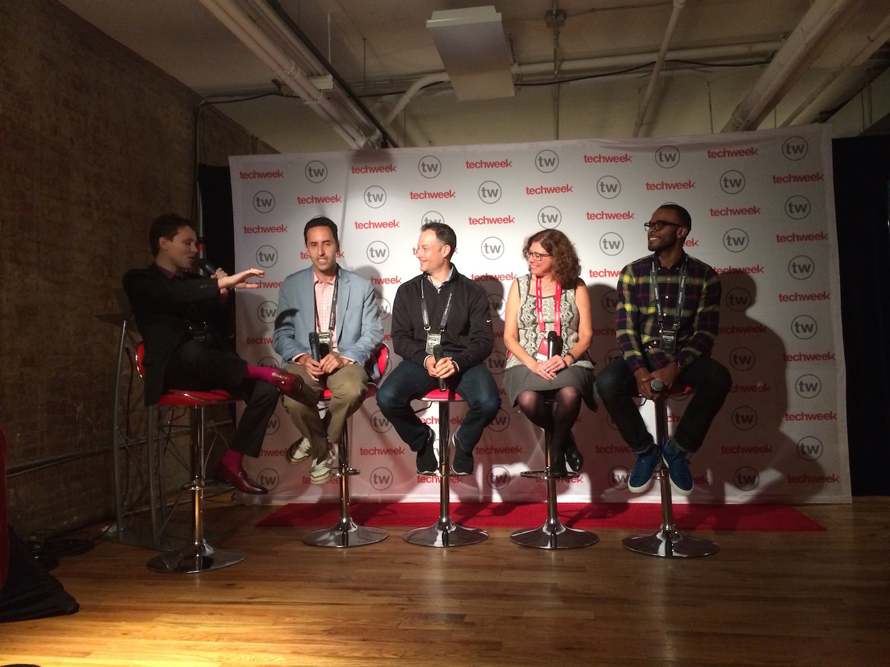
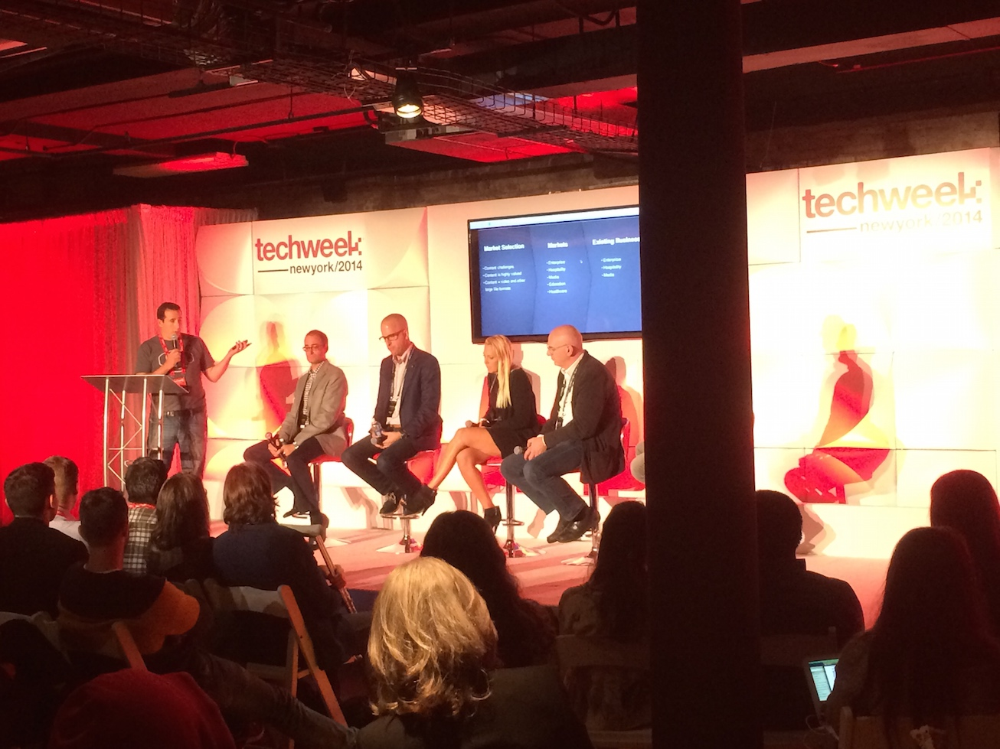

Earlier this month, I was lucky enough to attend Techweek, the self proclaimed #1 technology conference and festival in the Unites States. While I can't speak to the accuracy of this declaration, I did have a great time at the conference for the two days that I attended, and I met a lot of fascinating people and discovered some mind expanding / bleeding-edge technologies and innovative companies along the way. I also met one of my future Hack Reactor classmates for the first time here, and I'm really looking forward to spending the winter coding away in San Francisco with him and the rest of our cohort in HR23.
Techweek is still a fairly new and perhaps lesser known tech conference / festival compared to SXSW Interactive (1994) and the arguably more familiar Techcrunch Disrupt, which has been around for just as long (since 2011). Yet the Techweek conference is currently being held in five different cities (NYC, LA, Chicago, Detroit, Miami), while the SXSW Interactive (Austin) and TC Disrupt (SF, NYC, and this year London) can only claim one and sometimes three respectively. Additionally, after I met and spoke with Techweek's Chief Strategy Officer at the conference, it sounds like they have plans to continue their expansion into other cities and markets, which could set them apart from the existing tech conferences and potentially be a great platform for more local startup businesses and technologies. After all, Techweek's mission is to "showcase, celebrate, and enable emerging innovation ecosystems"...
Once I arrived at the Techweek NY conference for Day 1, I knew I was in for a different conference experience. As opposed to other conferences I have attended in the past that take place in large, mostly sterile environments, Techweek was set in a trendy underground loft space in Soho. I believe that this speaks to the mindset of the festival and the tech industry in general; cutting-edge, innovative, trendy...
After picking up my badge I made my way to the expo floor. It was riddled with startups, tech-centric companies, and a few larger companies that felt a bit out of place (American Airlines had a booth to showcase their larger seats in business class and nothing else), but overall the people that I met and the innovative platforms and technologies were astounding. Here are some of my picks for companies that stood out as innovators in their fields.
Rescued Ideas (Basslet)
The Basslet was perhaps my favorite part of the whole conference. It's a wearable bracelet that thumps to the rhythms of the bass for whatever song you are listening to, which gives you the feeling like you are experiencing the music in a live setting. It makes listening to music more fun, personal, and portable. Can't wait to see this product hit the market (and likely be snapped up by Apple)...
Erghis
Erghis is a Swedish company at the forefront of gesture-controlled-touchless-interaction technology (that was a mouthful). However, in contrast to my description, Erghis is actually making using devices and workflows more intuitive and simple by using in-air hand gestures to type, command, and control computers and devices. I think there is great future in touchless technology, so I am looking forward to seeing what arenas Erghis and this technology can take part of in the future, and if it is as intuitive and easy to use as they claim it to be. Watch the video on their homepage!
Hackerrank
Hackerrank's definition of a "hacker" is:
"someone who can make a computer do what he wants — whether the computer wants to or not."
I look forward to the day when I can consider myself hacker material. Hackerrank is out to allow people to make that dream a reality for many people. Hackerrank is a platform built for coders by coders. The site allows programmers of any skill level to practice their abilities and compete with other coders on programming challenges to move up the site's rankings. Also, the site hosts competitions sponsored by companies, where the winner(s) of the competition can interview with the company directly for a job.
Sailo
Peer-to-peer boat sharing network. Like Airbnb / Relay Rides but for your boat. Based in the Northeast U.S. but expanding to Miami and perhaps the West coast soon. Bon Voyage.
Admitted.ly
Addmittedly is a platform for U.S. high school students to determine which colleges are a good fit for them based on their personality. This is done through a quick online questionnaire which evaluates the student's psychology and preferences. It is already being used by over 100,000 students in the U.S. and is making the application process for undergraduate students easier and more manageable. Also, great domain name...
Easy Pairings
Restaurants can sign up with Easy Pairings to have candidates for staff positions hand selected by Easy Pairings staff and interview dates/times automatically scheduled. Potential service employees can sign up on the site with their skills / experience as well. Makes both finding a job and hiring a smoother process in the food industry. Yum...
I was also really impressed by the quality of the New York based startups, many of which dealt with real estate, transportation, or convenience / efficiency solutions. Here were some of the standouts IMHO:
Padspin
Padspin was the most impressive real estate startup I met. The company is based in NYC, where finding the right apartment to rent can conceivably be the most daunting task a New Yorker faces. Padspin makes the process a lot smoother (and more affordable) for renters, tenants leaving their apartments, and landlords alike. When a tenant is moving out of an apartment, they post their place on Padspin, and if they link up with someone to rent their place, the renter pays a relatively small fee (around 10% of the monthly rent) compared to what a broker would usually charge for finding a place, which can be anywhere from one month's rent to 15-20% of the annual rent for the apt! In all, this service streamlines the rental process in NY drastically, and it seems they have a great team of developers and managers behind the company as well.
Clean Cube
Clean Cube's aim is to make the lifestyle of the urban dweller more convenient and efficient. By installing "cubes" in residential buildings (and soon to be commercial spaces) throughout your city, you can rent a cube (like a locker) and order services where all of the pickup and drop-off is handled through the physical cube. This includes everything from package delivery, laundry, dry cleaning, grocery delivery, goodwill donations, and storage, which the clean cube team handles ENTIRELY through their sleek web interface or mobile app. Their operations seem fairly smooth as of now, though I would be interested to see how they scale. Still, I believe this model is definitely the future for many young / busy folk in bigger cities...
Via
Similar to Uber or Lyft, Via is a car service app that allows you to order a car from your phone and be taken to your destination. The difference here however, is Via is a rideshare app; meaning that you can share the ride with others who are traveling along your route to make the ride more affordable and efficient (+1 for carpooling!). While I can imagine a lot of potential issues with this system, I really like the concept and hope they continue to grow. Unfortunately the app requires a large user base, so they are currently only operating in NYC in Manhattan between 32nd street and 102nd street on the east side, though they did say they have plans to expand when more people start using the app. The upsides of this system? It costs just $5 per ride wherever you are going, and it is promoting more economical travel solutions. And hey, you might just meet some interesting people along the way. The sharing economy is taking over.
Wearable Tech Talk

Throughout the day, speakers throughout the tech industry converged on any of the three stages Techweek had set up. One of my personal favorite discussions was on wearable technology. One panelist sported a pair of Google glasses, another was a fashion / technology entrepreneur, a marketing guru who conveyed his opinions on the latest trends in the technology industry, and lastly a CEO of a wearable tech device that many professional athletes use in their daily training regimen. Topics included a discussion of the balance between functional and fashionable technology (the new Apple iWatch, Google Glass, high-tech fabrics) and how wearable technology will be able to enter our daily lives and not become a nuisance but a more useful and integrated part of our lives.
Tell Me a Story
One of my other favorite discussions was on how businesses can grow through their ability to tell a story. For example, companies like Red Bull and Tom's Shoes don't just sell energy drinks or shoes alongside traditional advertising. They spend a lot more money on building experiences and building their story which people can affiliate with and understand. This led to a discussion on how software companies can create a similar experience by opening up their software's capabilities through allowing external users to have access to more features within the software's API. This practice is essential for innovation, as the more people who have access to the functionality of an application, the more creation can come from it. It allows other companies to tell their own story by using pre-existing features on another company's software. This collaborative effort and open-source / sharing is what makes the world of technology move forward at the exponential pace that it does.

Next, was a panel of CTO's, who gave advice from how to launch your products to what it means to create a company culture and hold true your company's values. Here were some of my main takeaways:
You don't necessarily need to build all aspects of a software product before testing it on one realm. Eg. you don't need to build an iPhone app, iPad app, and website for a product before determining whether or not it can succeed in one of these spaces.
Company culture is not just about providing a ping-pong table in your office space and a bunch of free yoga classes to your employees. It's everything else. It's the way the people at the company think and are encouraged to think and act.
The biggest issues within companies can often be a lack of people communicating to one another, whether it is between teams, departments, or the people who you work with on a daily basis.
Fire fast. If people are not a good fit, it is often better for both parties to let them go and move on. This allows your business to make it a critical point to replace them quickly, and to find someone who is a better fit for the position or within the company.
The last talk I caught was on using social media as a tool for growing your enterprise. This was informative as it was interesting, as many innovative or premature social networks can often prove to be great boons to a company's success.
Again, storytelling is the future of brand success.
There is no need to post only content that directly relates to the topic which your company is involved in. Just engage people.
Think about posting information that not necessarily relates to the business but would appeal to your followers in general.
As a startup, you can only launch once. Make sure you do it right and are ready across all media channels, platforms, etc...
If you have an idea for a company:
- Do it now.
- Go big.
- Customers first.
After the two days at Techweek, I left sufficiently inspired. I was grateful to have met so many innovators in the tech world and to have had an insight into the future of the tech scene. It has influenced me to build products of my own and to given me an understanding of how I will fit into the tech world as a developer. I'm really hoping to display something I have worked on in an environment like this someday. Let the building begin.